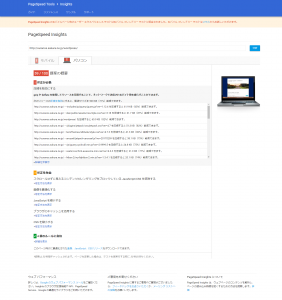
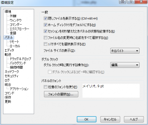
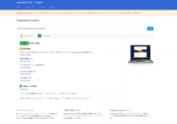
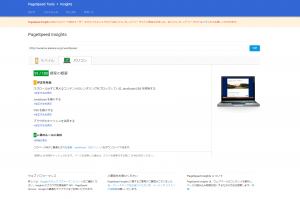

Introduction
このサイトのレスポンスが悪くなってきたので、サーバーの移転とかを検討しています。 しかしその前に、設定の見直しなどで高速化できないか、と調べてみました。
Google PageSpeed Insights
Google PageSpeed Insights は、携帯端末やデスクトップ端末向けのページのパフォーマンスを測定します。 計測後、点数(100点満点)で評価付けを行い、パフォーマンスの改善施策を提案してくれます。 下記は、このサイトを計測してみた結果になります。
 スコアが59/100とあまり芳しくないご様子。 修正として gzip や deflate を使用してリソースを圧縮することで、ネットワークで送信されるバイト数を減らすことができます。 という提案があります。 この修正案を全部適用すれば、転送サイズを 509 KB (71%)
削減できます。 とあります。これは大きい。 ですので、リソースの圧縮を適用することにします。
{kind=link}
圧縮を有効
WordPressの使い方と設定 というサイト様で、圧縮を有効にする - PageSpeed Insights という記事がありましたので、それを参考に設定を実施します。 まず、FTPでWordPressにアクセスします。 その際、FTPクライアントの設定によっては、**.htaccess** が表示されません。 例えば、WinSCP では、下記のように隠しファイルを表示する設定を有効にしないと表示されません。
 設定を有効後、**/home//www/wordpress/.htaccess** が表示されるはずです。 .htaccessをダウンロードして適当なエディタで開きます。 その後、下記の記述を追加します。
{kind=link}
1 | <IfModule mod_deflate.c> |
追加後、.htaccessファイルを転送し上書きします。 特にApacheの再起動などは不要です。 再度、PageSpeed Insightsで計測し、gzip や deflate を使用してリソースを圧縮することで、ネットワークで送信されるバイト数を減らすことができます。 という提案が無くなっていることを確認します。 
スコアが85/100と大幅に改善しました。
{kind=link}
ブラウザキャッシュを有効
続いて、下記の記述を追加して、ブラウザのキャッシュを有効にします。
1 | <IfModule mod_expires.c> |
こちらも再度パフォーマンス計測しなおします。

スコアが91/100と改善しました。
{kind=link}
Conclusion
数値的に大幅に改善したことがわかると、精神的に楽になります。 確かにブラウザでアクセスすると、ページの表示が速くなったのが目に見えて体感できました。